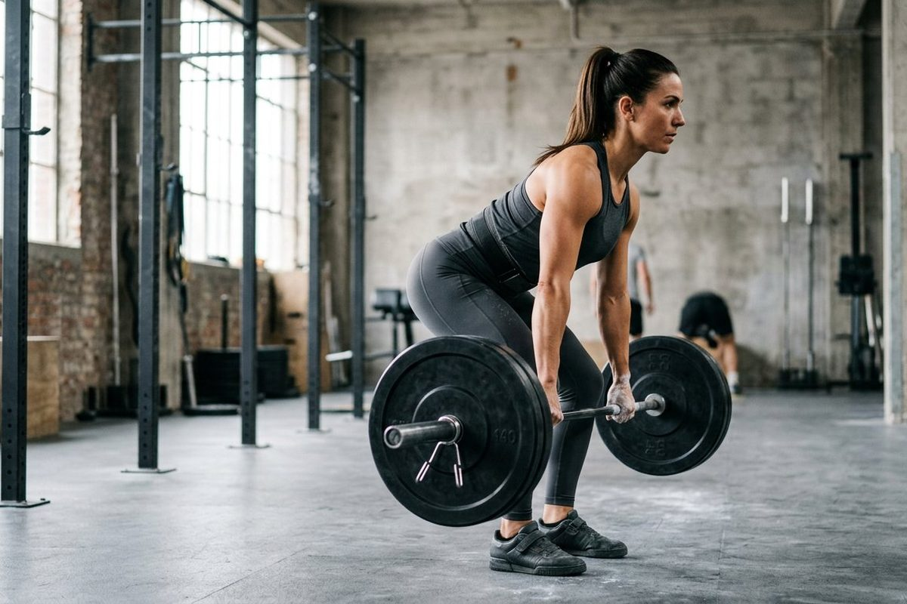

How to Deadlift With a Neutral Spine
The deadlift is the single best test of how well you can pick something heavy up without hurting yourself — which is a skill you use every time you move furniture or lift a suitcase. It is also the lift most often taught backwards: people are told to "keep your back straight" without being told how, so they arch it, or round it, and hope for the best.
